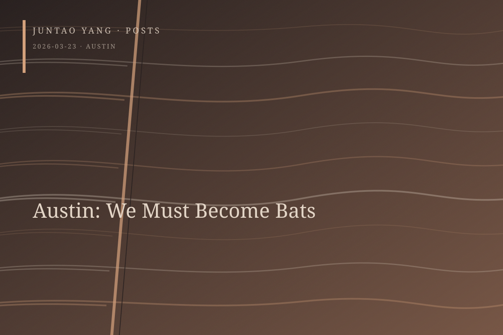

<content>
North of downtown Austin, the pink-granite panels quarried from the Texas Hill Country form a government complex that extends for miles. Their tonality differs from the tall glass-curtain-wall buildings along the Colorado River, though both claim transparency on different registers. Most of these government buildings are legacies of municipal construction and urban renewal in the 1960s. My first sensation was vertigo.
Le Corbusier’s ideal proves once again that its most suitable realization may be the large parking garage. Ribbon windows become open structures between floors, while an honest treatment of mass and surface becomes synonymous with no maintenance, or the minimum possible. Ambition and unapproachability appear to have faded; the buildings make themselves almost humble through declarations of pure functionalism. With precast panels, unadorned assembly, and modular logic, Brutalism in late-1960s Texas ceased to be an aesthetic or ethical choice. Its qualities were simply the cheapest available. Yet this may be an illusion. Once one notices LBJ’s name appearing across so many buildings, an unceasing and unrepentant desire to control and transform, a desire that never knows where its boundary lies—perhaps one face of Texas—begins to seem essentially similar to concrete.
These rough, tedious, sun-flecked works of Pink Brutalism escaped collective public opposition largely because they were enclosed, at a geological level, within a mythology of Texas nativism. The process began in the late nineteenth century, when the owners of Granite Mountain in Burnet County “donated” stone to the state capitol—a particularly ironic word, given that they received a railway extending from Fairland to the quarry. Geological bodies were extracted, cut, transported, and assembled into the surface of sovereignty. We know the absurdity of privatizing natural existence on Indigenous land. We also know of the Black prisoners captured by unjust structures and deliberately engineered legal traps, whose cheap labor formed the first mediation undergone by extractivism.
As Jason W. Moore has tried to diagnose, this history of capitalist slavery, predicated on rendering natural resources free and labor cheap, has been largely buried. On the other side of the watershed, what is now protected as Enchanted Rock is simply a more remote and less readily extractable exposure of the same bedrock. It has therefore been translated, in the name of preservation, into a symbol of native identity and nationalism. The reverse side of extractivism begins at the level of representation and mediation.
Austin repeatedly proves that great cities excel at great concealments. This becomes plain when the Texas Eagle sounds its horn while crossing the flat and tedious Interstate 35. On the western side, land now occupied by the vast UT Austin campus and the state government complex once held “freedom colonies” established by emancipated Black people after the Civil War. After the 1928 city plan destroyed Black communities through passive-aggressive means—racial zoning having already been declared illegal—I-35 cut a straight, sharp line between the prosperous downtown and the East Side to which Black residents had been driven, an area named the “Negro District” in administrative documents of the period.
The process continues. Historically minoritized neighborhoods are gradually occupied by white settlers and subjected to further gentrification, while established residents are forced into more distant suburbs. The few active artist-run and alternative grassroots spaces of East Austin—Women & Their Work, the Museum of Human Achievement, and Co-Lab Projects—make the community stranger and more interesting. Members of this creative class are refugees from rising rents and, at the same time, advance agents who attract gentrification. They are best understood as symptoms appearing in the intervals between waves of encroachment, not as wholly innocent things.
This segregation destabilizes the discourse Austin’s bureaucracy has woven around “The Live Music Capital of the World.” When the chamber of commerce and media industries collaborated to market the title in the 1980s, minoritized music venues in East Austin—especially those devoted to jazz, R&B, blues, and soul—were largely excluded. One endlessly repeated myth concerns Willie Nelson’s 1972 performance at the legendary Armadillo World Headquarters, whose former site is now a vast parking lot. That night, the story goes, UT Austin’s poor and radical young hippies, with political energy they had nowhere to discharge, miraculously united under the banner of music with the rednecks who had long claimed the bars, guitars, and native culture as their own.
When the bourgeois children of the counterculture and conservative rural whites discovered that they had far more in common than expected, Black Austin was finally and completely excluded from this narrative of “white tribes coming together.” Partly in response, and partly because of the almost paranoid queues at Franklin Barbecue, I went instead to Stubb’s, the indoor-outdoor music and barbecue venue on Red River associated with Korean War veteran, Black pitmaster, and blues musician C. B. “Stubb” Stubblefield. Old photographs and promotional posters cover every dim and rough wooden wall. Texas barbecue does not, in truth, astonish the world, and today’s Stubb’s is controlled by ticketing and entertainment giant Live Nation.
After dark, I went to the independent venue Mohawk on Sixth Street, where country, rock, and fast-paced comedy dominate the famous thoroughfare, hoping to experience contemporary Austin music in an embodied way. It proved to be a ninety-nine-percent white space. Indoors, the vocalist of Skullcrusher moved between dream pop and psychedelic ambient, her soft, nearly murmured voice accompanied by acoustic guitar, bass, and keyboard. The outdoor dance floor hosted a large, loud, and restless Heated Rivalry party. The cultural Left has inherited a tendency to place excessive hope in subculture and alternative entertainment, as if they might finally deliver a utopian future without recourse either to violent struggle or to the authoritarianism of the vanguard. More often, regrettably, they merely reproduce themselves within a community of sensibility, without producing any genuinely transgressive disturbance.
Perhaps Austin is moving ever farther from independent music and the counterculture. It is being propelled into a technology-dominated era, retracing California’s history: from collaboration between UT Austin and the military-industrial complex, through Dell and the dot-com generation, to the incursion of today’s internet giants. The consequences are higher rents, more regulated structures of life, and an ethics increasingly concentrated on individual career. The successive transformations of South by Southwest say as much: from a music festival to an event encompassing film and television, then to the addition of a so-called technology section—whatever that is supposed to mean.
We confront a relentless expulsion. More terrifyingly, its executioners proceed with an attitude bordering on entertainment, as if they have never once confronted the face of the victim. This technoprogressive and utopian optimism has a history. Beside the motor lodge where I stayed stands one of the world’s remaining moonlight towers, a nineteenth-century apparatus of public illumination entangled with technical rationality and colonial shadow. Almost without volume, its fifty-meter line seems to rise in the lightest possible gesture, only to be bound to the earth by steel cables. Six carbon-arc lamps once burned the sky at temperatures of three to four thousand degrees Celsius, tearing apart the gentleness of night with excessive light.
But we swear that we will find a way out. We nocturnal creatures, the despised, the humiliated, the damaged, the abject: we must find a way beneath this blazing beacon that casts madness and hatred into bronze statues and vows to banish darkness altogether. We must learn from everything spat upon. We must inhabit the cracks in great projects, take root in damp and indifferent places, howl, and forage. Such are the tactics of survival.
At sunset, Mexican free-tailed bats sweep across the sky in terrifying numbers. Along a Colorado River fundamentally cleared and remade, they found a new home inside the dark seams between concrete slabs beneath the Congress Avenue Bridge.
There is no other way. There is no other way.
</content>
March 23, 2026
Austin: We Must Become Bats
Austin conceals extraction, segregation, and technological displacement beneath pink granite, musical mythology, and progressive transparency; survival requires becoming batlike.
